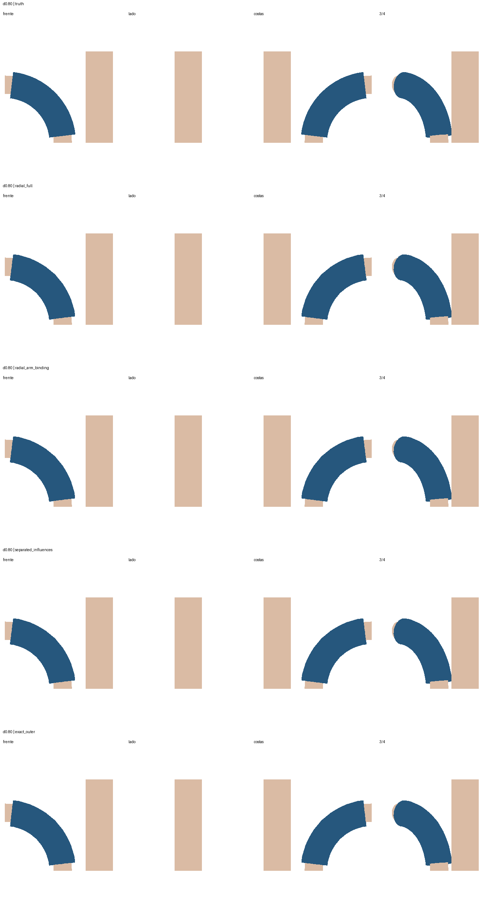
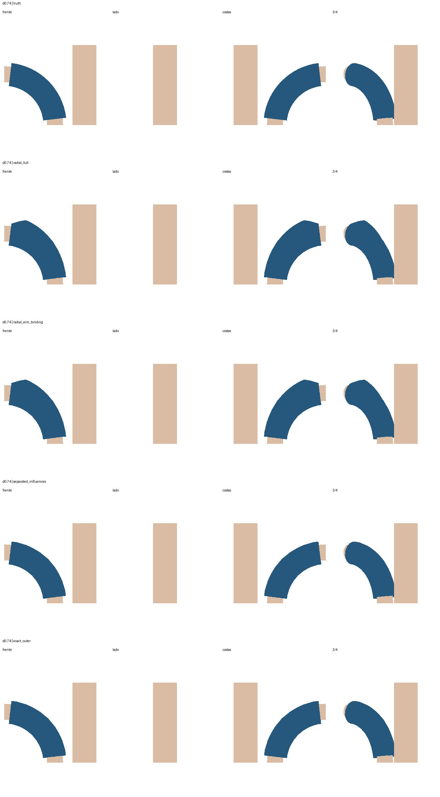
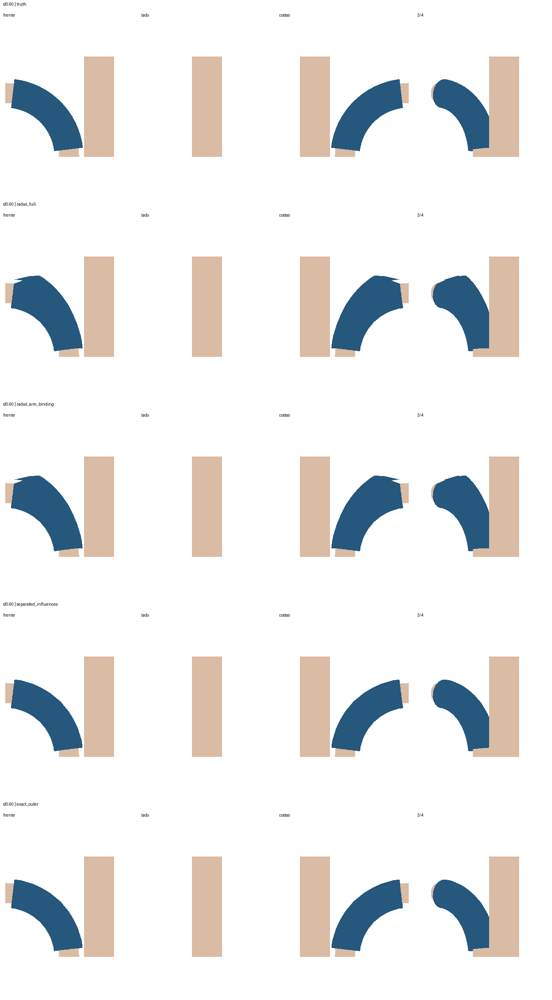

O braço e sua resposta correta não mudam. Aproximamos apenas o volume parado. Linhas: resposta, radial completo, radial com vínculo fixado no braço, influências separadas por componente, outer correta. Azul: manga; bege: corpos. A separação de influências é um controle, não uma solução universal.
Relatório · Oito distâncias: métricas, pesos, testemunhos e hashes


